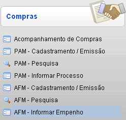
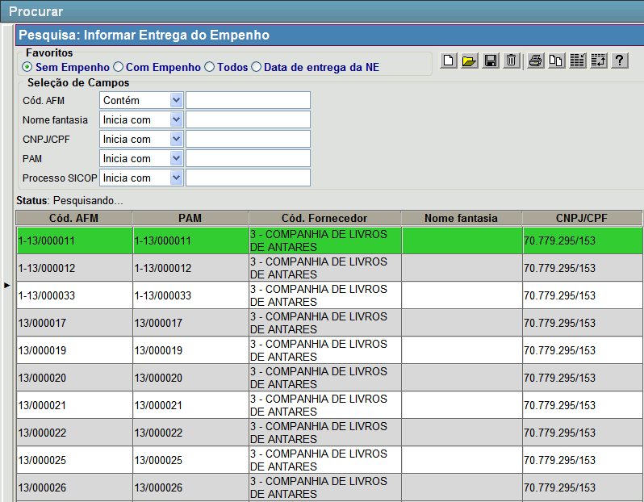
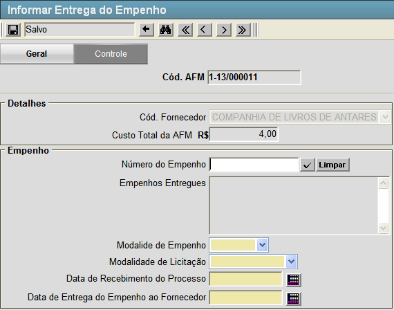

| ||
AFM - Informar Empenho [ Voltar ]Esta tela permite o usuário adicionar o número dos empenhos associados a AFM - Autorização de Fornecimento de Material. O formulário "AFM - Informar Empenho" encontra-se dentro do menu "Compras - Compras". 
Após clicar no formulário, o sistema abrirá a seguinte tela: 
Siga os passos abaixo para localizar a AFM que será associada aos empenhos. 1º Passo: configure os filtros de acordo com suas necessidades. Utilize os filtros da pesquisa para localizar a AFM desejada. No favorito "Sem Empenho", são eles:
2º Passo: selecione com um clique a AFM
desejado. O usuário será direcionado à tela
"Informar Entrega do Empenho", conforme imagem abaixo:
 3º Passo: informe os dados dos empenhos associados a AFM. Preencha todos os campos. São eles:
Após informar os dados dos empenhos clique no botão  [Salvar] para armazenar as novas informações. [Salvar] para armazenar as novas informações. |
 para confirmar sua inserção. Lembre-se que pode ser adicionado mais de
um número de empenho associado a mesma AFM. Caso seja confirmado algum
número erroneamente clique no botão [Limpar], toda a lista de empenhos confirmados será apagada para que possam ser inseridos novamente.
para confirmar sua inserção. Lembre-se que pode ser adicionado mais de
um número de empenho associado a mesma AFM. Caso seja confirmado algum
número erroneamente clique no botão [Limpar], toda a lista de empenhos confirmados será apagada para que possam ser inseridos novamente. [Data] para selecioná-la por meio de um calendário.
[Data] para selecioná-la por meio de um calendário.